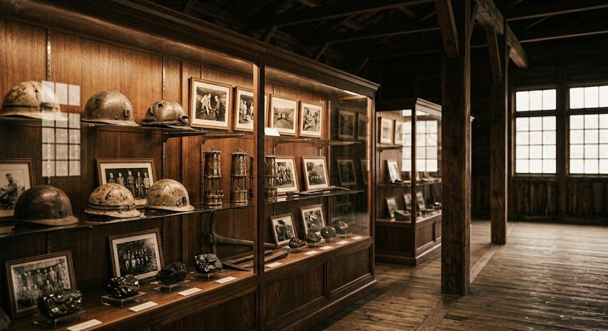

沼田幌新のクマ事件の熊の毛皮
日本三大熊事件のひとつに数えられる「沼田幌新のクマ事件」。事件を起こした熊の毛皮を展示しています。大正12年に起きた出来事を、実物とともに学べます。
沼田町の歴史的な出来事や産業文化を後世に伝え、地域の学習や観光に生かすために整備された施設です。炭鉱のあゆみと、町の記憶をたどることができます。

町の歴史を語る資料が、静かに並んでいます。
日本三大熊事件のひとつに数えられる「沼田幌新のクマ事件」。事件を起こした熊の毛皮を展示しています。大正12年に起きた出来事を、実物とともに学べます。
かつて沼田町の炭鉱で活躍した小型の蒸気機関車を、別棟で静態展示しています。日本遺産に指定された車両です。保存状態がよく、来館者からも感動の声が寄せられています。
山あいの幌新で、
町の歴史にゆっくり向き合う一日を。
★★★★★沼田町の炭鉱の歴史と、大正12年8月21日に起きたヒグマによる殺傷事件について学べます。事件を起こした体重240キロのヒグマの皮が展示されています。炭鉱は昭和5年から出炭を開始し、昭和44年に閉山。当時、石炭の運搬に使われた蒸気機関車が別棟に保管展示されています。
★★★★★石狩沼田駅から車で20〜30分。ほろしん温泉の学習体験施設のひとつで、炭鉱資料館に蒸気機関車クラウス15号が静態展示されています。車両はとてもきれいな状態で保存されていて、見ていて感動的でした。館内にはヒグマの毛皮も展示されていました。
| 施設名 | ほたる学習館・ふるさと資料館分館・炭鉱資料館 |
|---|---|
| 住所 | 北海道雨竜郡沼田町幌新 |
| 電話番号 | 0164-35-2155 |
| 休館日 | 月曜日（祝日の場合は翌日） 年末年始（12月30日〜1月5日） |
| メール | angyou@town.numata.lg.jp |
| 公式サイト | 沼田町の施設ページを見る |